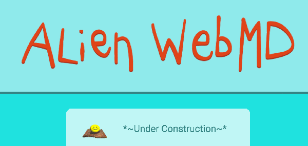
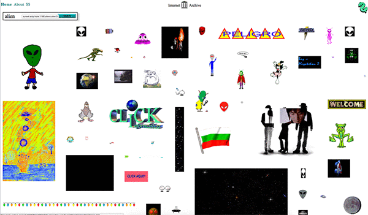
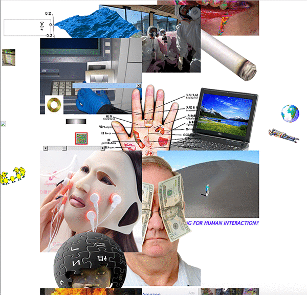
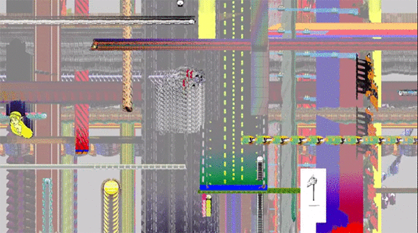

project topic brainstorm: diy, art and technology
I would like to create an interactive web zine that would come out with bi-monthly issues that express a collective cosciousness about various topics, mediated through the unique and self-referential language and framework of the internet, using gifs, memes, video, prose, popups, essays, and images collaged together. The zine would take content submissions in advance of releasing issues. The zines would address our relationship with internet and technology as they intersect with other contemporary topics such as feminism, politics, and identity.
Below are some sources of inspiration:
  